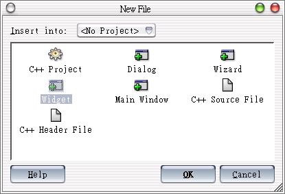
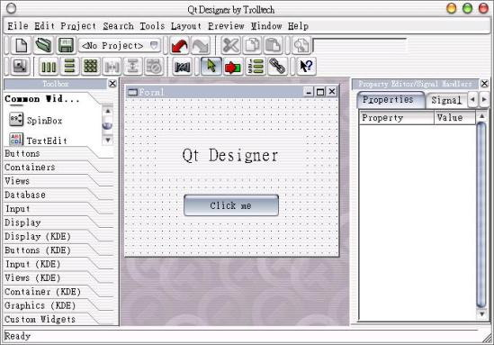
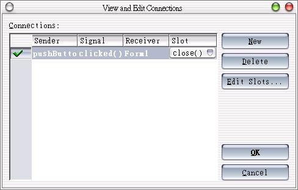
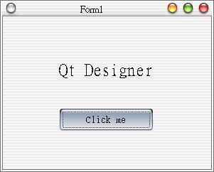

在開發Qt視窗程式時，我們可以使用Qt Designer的所視即所得環境，協助我們進行視窗外觀的設計，並透過指令產生對應的*.h與*.cpp檔案，這邊介紹Qt Designer的一些簡單的使用方法。
首先開啟Qt Designer，執行選單中的[File/New]指令（或按Ctrl+N）新增要使用的視窗類型，如下圖所示：

接下來的畫面與Visual Basic很像，我們在左邊的Toolbox選擇元件，在中間的表單區域以拖拉的方式配置元件，在右邊的Property Editor設定相關屬性，假設我們的元件如下配置：

接下來我們進行簡單的Signals - Slots連結，執行選單中的[Tools/Connect Signal/Slots]指令（或按F3），然後選擇發出Signal的元件，接著會出現以下視窗，在這邊我們簡單的設定按下按鈕後關閉視窗：

您可以執行選單中的[Preview/Preview
Form]指令（或按Crtl+T）來預覽配置成果，接下來我們執行[File/Save]指令（或按Ctrl+S），將之儲存為form1.ui檔，這
個檔案一堆描述元件屬性的標籤所組成，我們可以使用下面的指令來產生*.h檔：
uic -o form1.h form1.ui
然後我們使用下面的指令產生*.cpp檔：
uic -i form1.h -o form1.cpp form1.ui
您可以直接開啟這兩個檔案來看看它們的內容，並根據實際需求再作些修改，下面是我們產生的*.h檔內容：
/****************************************************************************
** Form interface generated from reading ui file 'form1.ui'
**
** Created: 銝� 7��21 11:11:59 2003
** by: The User Interface Compiler ($Id: qt/main.cpp 3.1.2 edited Dec 19 11:45 $)
**
** WARNING! All changes made in this file will be lost!
****************************************************************************/
#ifndef FORM1_H
#define FORM1_H
#include <qvariant.h>
#include <qwidget.h>
class QVBoxLayout;
class QHBoxLayout;
class QGridLayout;
class QPushButton;
class QLabel;
class Form1 : public QWidget
{
Q_OBJECT
public:
Form1( QWidget* parent = 0, const char* name = 0, WFlags fl = 0 );
~Form1();
QPushButton* pushButton1;
QLabel* textLabel1;
protected:
protected slots:
virtual void languageChange();
};
#endif // FORM1_H
下面是產生的*.cpp內容：
/****************************************************************************
** Form implementation generated from reading ui file 'form1.ui'
**
** Created: 銝� 7��21 11:12:43 2003
** by: The User Interface Compiler ($Id: qt/main.cpp 3.1.2 edited Dec 19 11:45 $)
**
** WARNING! All changes made in this file will be lost!
****************************************************************************/
#include "form1.h"
#include <qvariant.h>
#include <qpushbutton.h>
#include <qlabel.h>
#include <qlayout.h>
#include <qtooltip.h>
#include <qwhatsthis.h>
/*
* Constructs a Form1 as a child of 'parent', with the
* name 'name' and widget flags set to 'f'.
*/
Form1::Form1( QWidget* parent, const char* name, WFlags fl )
: QWidget( parent, name, fl )
{
if ( !name )
setName( "Form1" );
pushButton1 = new QPushButton( this, "pushButton1" );
pushButton1->setGeometry( QRect( 80, 130, 131, 31 ) );
textLabel1 = new QLabel( this, "textLabel1" );
textLabel1->setGeometry( QRect( 50, 50, 191, 51 ) );
QFont textLabel1_font( textLabel1->font() );
textLabel1_font.setPointSize( 18 );
textLabel1->setFont( textLabel1_font );
textLabel1->setAlignment( int( QLabel::AlignCenter ) );
languageChange();
resize( QSize(293, 215).expandedTo(minimumSizeHint()) );
clearWState( WState_Polished );
// signals and slots connections
connect( pushButton1, SIGNAL( clicked() ), this, SLOT( close() ) );
}
/*
* Destroys the object and frees any allocated resources
*/
Form1::~Form1()
{
// no need to delete child widgets, Qt does it all for us
}
/*
* Sets the strings of the subwidgets using the current
* language.
*/
void Form1::languageChange()
{
setCaption( tr( "Form1" ) );
pushButton1->setText( tr( "Click me" ) );
textLabel1->setText( tr( "Qt Designer" ) );
}
我們使用下面這個main.cpp程式來測試成果：
#include "form1.h"
#include <qapplication.h>
int main(int argc, char **argv) {
QApplication app(argc, argv);
Form1 *fm = new Form1();
app.setMainWidget(fm);
fm->show();
return app.exec();
}
下圖為執行結果，按下按鈕會關閉視窗：

|
|